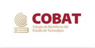

COLEGIO DE BACILLERES DEL ESTADO DE TAMAULIPAS
|  |
| No. | DIRECTOR GENERAL | PERIODO DE | A |
|---|---|---|---|
| 1 | Profr. Gustavo Adolfo García Paz | Junio 1988 | Julio 1996 |
| 2 | Profr. Gumersindo Guerrero García | Agosto 1996 | Marzo 2000 |
| 3 | Profra. Yolanda González de la Garza | Abril 2000 | Diciembre 2001 |
| 4 | Lic. José Monroy Zorrivas | Diciembre 2001 | Mayo 2003 |
| 5 | Profr. José Santos Valdés Salazar | Junio 2003 | Febrero 2004 |
| Lic. Miguel Francisco de la Fuente Morón (Encargado de Despacho) |
Febrero 2004 | Abril 2004 | |
| 6 | Profr. Pedro Gámez Trejo | Abril 2004 | Diciembre 2004 |
| 7 | Ing. Humberto Valdés Richaud | Enero 2005 | Septiembre 2005 |
| 8 | Lic. Isaac Mata Vizcaíno | Septiembre 2005 | Abril 2011 |
| 9 | Dr. Carlos Castro Medina | Mayo 2011 | Septiembre 2016 |
| 10 | Lic. Pablo Cantú Hinojosa | Octubre 2016 | Marzo 2017 |
| Lic. Juan Marcos Saldaña García (Encargado de Despacho) |
Abril 2017 | Julio 2017 | |
| 11 | Lic. César Guerra Montalvo |
Agosto 2017 | Octubre 2019 |
| 12 | Lic. Mario Andrés de Jesús Leal Rodríguez | Noviembre 2019 | Abril 2021 |
| 13 | Mtro. Miguel Efrén Tinoco Sánchez |
Abril 2021 | Enero 2022 |
| 14 | Lic. Patricio Garza Tapia |
Febrero 2022 | Septiembre 2022 |
| 15 | Dr. Rubén Ely Ramírez Rivas |
Octubre 2022 | A la fecha |